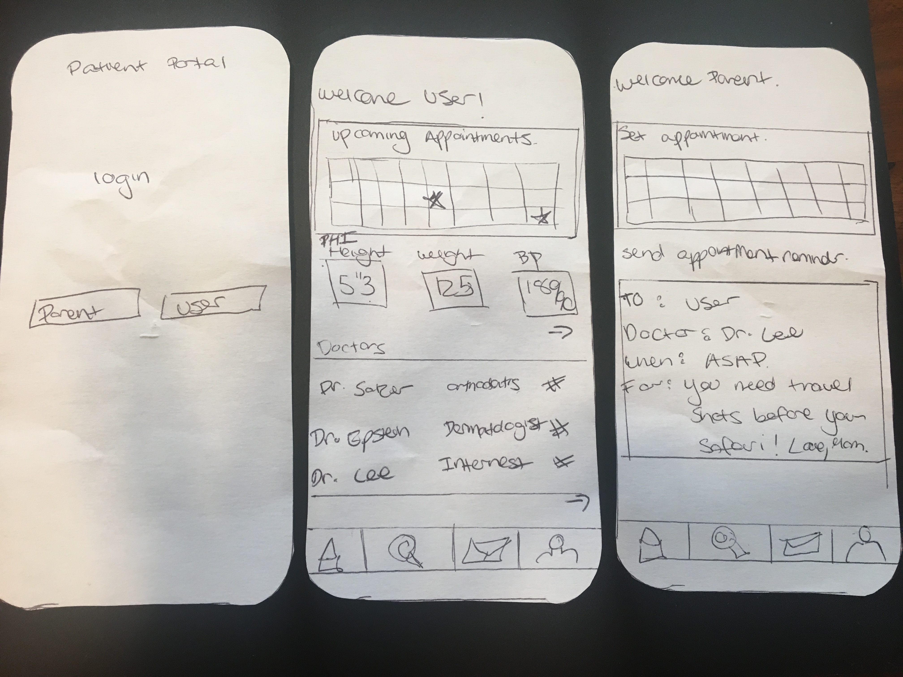

Concept 1: Preventative care based off of family history
A customizable application to allow for users to set up their own health plans based off of family history might help users who have not had to handle their own healthcare before set up a preventative plan. If a user has a family history of skin cancer, they will be prompted to schedule bi-annual checkups

The first step will be a series of screens that ask users information about their family history. Users will be able to skip these onboarding questions and add the answers at a later point.
The user will be immedietly prompted to schedule their appointments.
The user dashboard will feature the PHI so that the user can keep track of information that they may need to share between specialists.
The notifications center could either alert them when something was wrong and they needed to go see the doctor, or remind them to schedule/attend appointments.
Concept 2: Establishement of health care literacy for young adults
A Patient Health Information portal with logins for users and parents would help young adults transition into independently scheduling and maintaining their own healthcare.
The first step is a login screen where the user logs in either as the parent or the young adult using the app. Based off their selection, they will be routed to a different dashboard.
The parent dashboard is made to allow parents to work with more then one young adult. The top of the dashboard featuers a calendar where parents can choose to set appointments by clocking on the date. The bottom of the dashboard features a form to create an appointment reminder. This allows parents to send their children reminders of when to make an ppointment, with who, and what they need to discuss. The appointment reminder allow parent to still keep track of their children's healthcare why also enabling them to take responsibility.
The user dashboard features three components. The top is a calendar to set appointments similar to the one on the parent dashboard.
Below is an area for users to record their PHI when they are in the doctors office. One problem yound adults have is that they are unable to send information between doctors, making appointments difficult and redundant.
The third dashboard feature is an area for users to keep track of their doctor's name, speciality, and contact information. By clicking on a doctor they will be able to contact or schedule an appointment. This feature will eliminate young adults not going to the doctor because they can't remember the name of the doctor or practice.